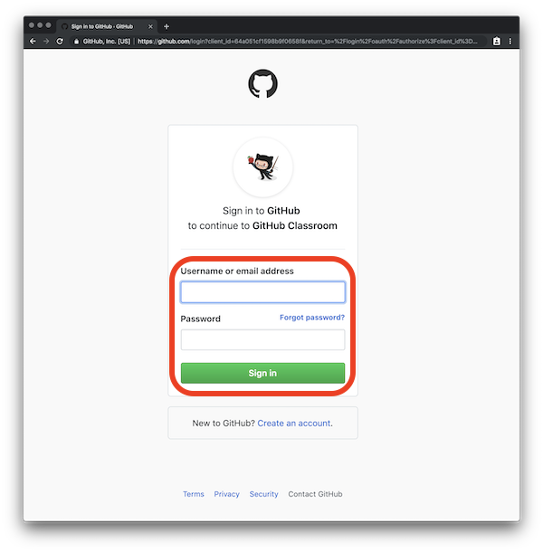
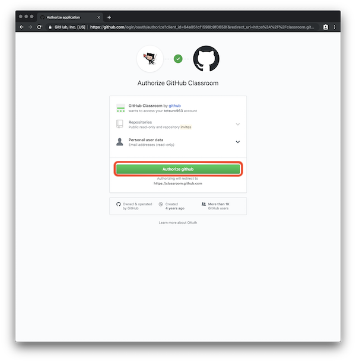
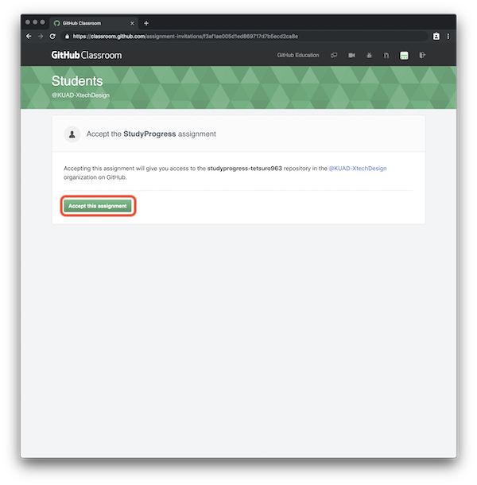
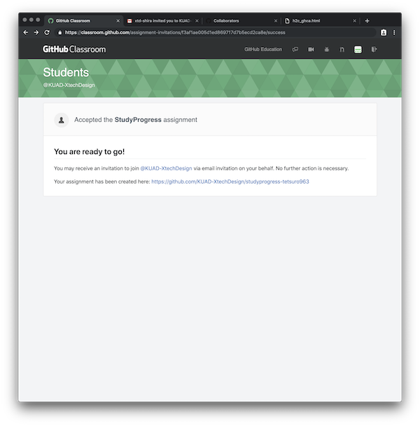
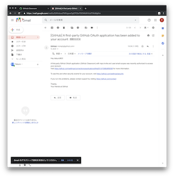
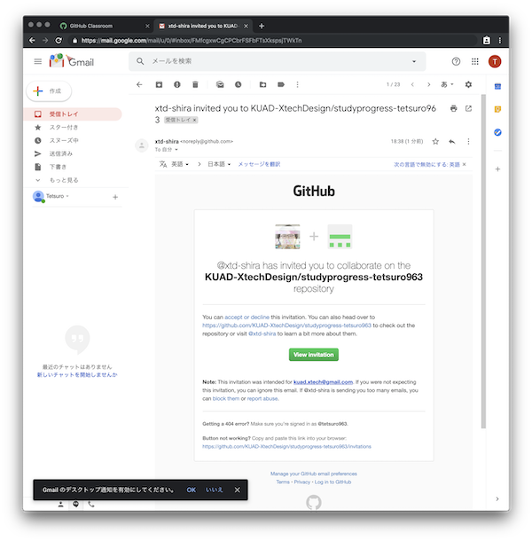
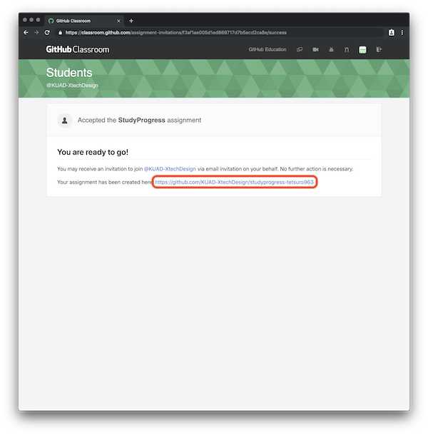
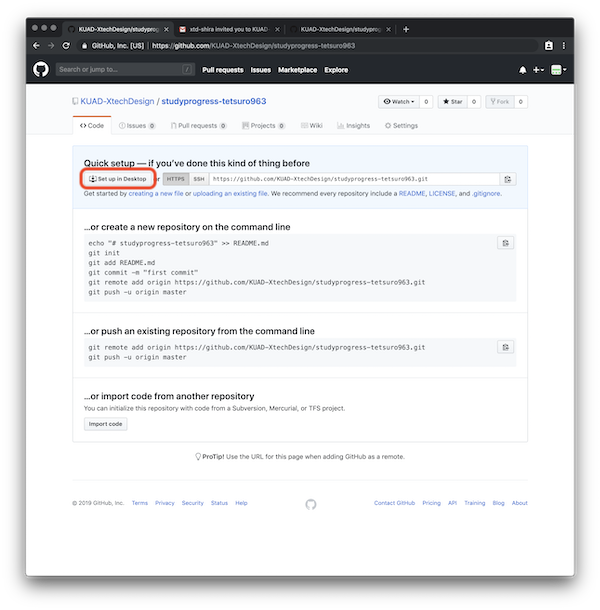

招待URL / Invitation URL
招待URLのリンクを踏むと以下のページにアクセス可能
- 既存の（今まで使っていた）GitHubアカウントでログインする 
- "Authorize GitHub"（ログインしたアカウントに権限付与）をクリック 
- "Accept this Assignment"（アサインメントの受け入れ）をクリック 
- 新規Repositoryの作成完了 
- 以下のメール（2通）が届いている  
- ちょっと戻って"Your assignment has been created here"以降をクリック 
- "Set up in Desktop"をクリック 
- GitHubDesktopが（自動で）開き、以下のウィンドウでCloneをクリック
- RepositoryURL~が間違っていないか確認( https://github.com/KUAD-XtechDesign/studyprogress-yourname.git )
- LocalPathはローカルPCに保存されるフォルダの場所（要確認）
- 指定したフォルダ内にディレクトリができていればクローン完了！